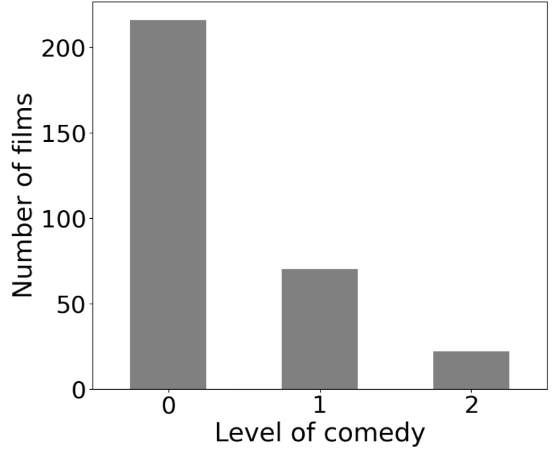

Data Collection
We constructed two datasets based on films nominated for the César Awards by scrapping Wikipedia on October 3, 2025. The first dataset includes all films nominated for the Best Picture category from 1976 to 2025 (N = 271), along with additional information such as the film’s director, the synopsis, the nomination status (nominated or winner), the genre tags and the Wikipedia pages of both the film and its director. The second dataset contains the same information for the Best Director category (N = 265), covering the same time period (1976– 2025). Finally, we concatenated the two datasets so that each film appearing in either category (or both) was included.
Comedy Classification
For this analysis, we chose to classify comedy based on the wikipedia genre tags.
The level comedy is 0 (No Comedy) if the Comedy tag is absent from the list of genres.
The level comedy is 1 (Mixed Comedy) if the Comedy tag is present alongside at least one of the following genres: Drama, Action, Romance, or Horror.
The level comedy is 2 (Pure Comedy) if the Comedy tag is present, and none of the four genres above appear.

If you want to have more information on the method and the results of this study, here is the complete report: Report Comedy in Césars
Visualisations of the variables
Results
The regression shows that the level of comedy in a film increases significantly with its log box-office revenue (b = 0.239$, p < 0.001, R² = 0.013). Conversely, the level of comedy decreases significantly with audience ratings (b = -2.440, p < 0.001, R² = 0.007) and press ratings (b = -4.690, p < 0.001, R² = 0.014). See the charts below for more information.
Thus, the analysis of Rotten Tomatoes reviews and the TMDB database shows that a film’s level of comedy has a positive and significant effect on its box-office success, but a negative effect on critics’ ratings. However, contrary to my initial hypothesis, this negative influence is also significant for audience ratings, suggesting a difference in audience profiles between box-office viewers and the audience reflected in Rotten Tomatoes reviews.